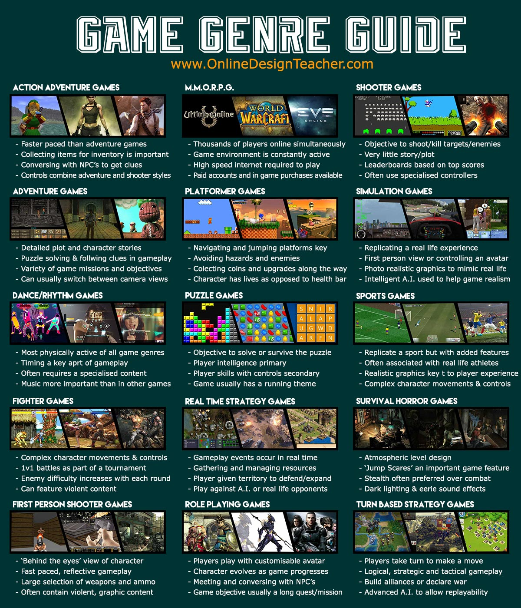

Why Genres Matter
Game genres help players find experiences that match their interests. A person who enjoys action and pressure may prefer shooters like Call of Duty or Rainbow Six Siege, while someone who likes world-building and slower progress may enjoy role-playing or survival games like Minecraft or Terraria.
Understanding genres can make it much easier to choose what to play next, and it may even open you up to new types of games you did not find interesting before.
Popular Genres
- Action shooter games focus on speed, reaction time, and strategic thinking.
- Role-playing games focus on character growth, story, and freedom of choice.
- Survival games are based on exploration, planning, and resource management.
- Horror games are focused on tension, atmosphere, and suspense.
Each genre offers a different kind of experience, and while there are tons of genres, the ones above are some of the most common.

Image showing different types of gaming genres. Provided by Online Design Teacher.
Find Your Genre
Fill out the form below to get a genre suggestion based on your gaming preferences.